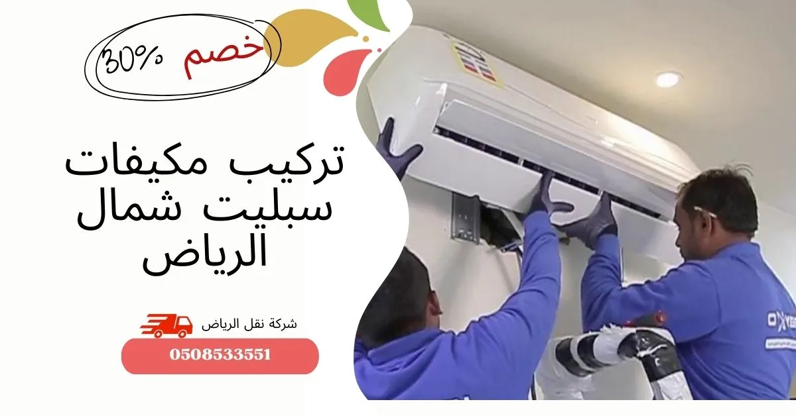

تركيب مكيفات سبليت شمال الرياض

يعد تركيب مكيفات سبليت شمال الرياض من الأمور المهمة التي يبحث عنها سكان الرياض، وهذا لضمان الراحة في فصل الصيف الحار، كما يعتبر مكيف السبليت الخيار المثالي للمنازل والمكاتب فهو يساعد في توزيع الهواء البارد بشكل متساوٍ ويوفر استهلاكًا منخفضًا للطاقة، حيث تتطلب عملية تركيب المكيف خبرة ودقة لتحقيق أفضل أداء وكفاءة لذا، من المهم الاعتماد على فنيين متخصصين لضمان تركيب آمن وفعال للمكيفات في شمال الرياض.
تركيب مكيفات سبليت شمال الرياض
يفكر الكثير من الأشخاص في تركيب مكيفات سبليت شمال الرياض، لذلك يجب أخذ عدة عوامل في الاعتبار لضمان أداء مثالي أولاً، تأكد من اختيار مكان مناسب لتركيب الوحدة الداخلية بحيث يكون بعيدًا عن الحرارة المباشرة وأماكن التهوية المغلقة، كما يتم تركيب الوحدة الخارجية في مكان جيد التهوية لضمان تبريد فعال، وتنصح شركتنا بالاستعانة بفنيين متخصصين لضمان أن يتم تركيب الأنابيب والأسلاك بشكل صحيح لتجنب أي مشاكل مستقبلية، فـ من الضروري أيضًا أن يتم التأكد من ضغط الفريون ومراجعته لضمان عمل المكيف بكفاءة عالية، بالإضافة إلى وضع العزل المناسب لتقليل الضوضاء والتسريبات، يعتبر تركيب مكيف سبليت بشكل صحيح لا يساعد فقط في تحسين الأداء ولكن أيضًا يطيل عمر المكيف.
فني تركيب مكيفات سبليت
هل تبحث عن فني تركيب مكيفات سبليت المتخصص، والذي يقوم بتركيب وصيانة مكيفات السبليت بطريقة احترافية لضمان أفضل أداء للمكيف، كما أن فني تركيب مكيفات السبليت لديه أفضل المهارات والخبرة الكبير التي تساعد في تركيب الوحدات الداخلية والخارجية بشكل صحيح وفقًا للمعايير الفنية المعتمدة، حيث تبدأ مهمة الفني باختيار المكان المثالي لتركيب المكيف، ثم يبدأ في الخطوة التالية بعملية توصيل الأنابيب الكهربائية وأنابيب الفريون مع ضمان عدم حدوث تسريبات، حيث يتطلب تركيب مكيف السبليت دقة في العمل، بالإضافة إلى أن أي خطأ في التركيب فهو يؤثر على كفاءة المكيف أو يؤدي إلى أعطال في المستقبل إلى جانب التركيب، وهذه الأسباب يقوم الفني بالتحقق من ضغط الفريون وتعديله إذا لزم الأمر، ليتأكد من أن المكيف يعمل بكفاءة عالية دون اي مشاكل، لذلك يعد استشارة فني متخصص والأستعانة بشركة تركيب مكيفات سبليت شمال الرياض أمر ضروري للحصول على أفضل أداء من الجهاز، كما يساعد في إطالة عمر المكيف وضمان راحة المستخدم.
فني تركيب مكيفات فلبيني
يبحث الكثير من الناس عن فني تركيب مكيفات فلبيني، لأنه يتمتع بسمعة ممتازة في مجال تركيب وصيانة المكيفات، كما أنه يمتلك المهارات اللازمة للتعامل مع مختلف أنواع المكيفات السبليت والشباك، فهو يتميز بالخبرة الواسعة في مجال فك وتركيب المكيفات، كما يمكنه تركيب المكيفات بكفاءة ودقة مما يضمن أداءً مثاليًا للجهاز بعد التركيب، بالإضافة إلى العديد من المزايا الأخرى التي يتمتع بها الفني الفلبيني، والتي تتمثل في الالتزام بالمواعيد والحرص على إتمام العمل بأعلى معايير الجودة، بالإضافة إلى أنه يتمتع بالقدرة على تشخيص أي مشاكل فنية مع تقديم حلول ممتازة، كما يستخدم الفني الفلبيني أيضًا أحدث الأدوات والتقنيات لضمان تركيب آمن وسليم للمكيف، بالإضافة إلى إجرائه فحصًا شاملاً للتأكد من تشغيل المكيف بشكل مثالي بعد التركيب فهو يحرص الفني الفلبيني على تقديم خدمة عملاء مميزة، بما في ذلك الإجابة على استفسارات العملاء وتوفير نصائح للحفاظ على كفاءة المكيف.
أهم مميزات شركة تركيب مكيفات سبليت شمال الرياض
- تتمتع نقل الرياض بخبرة كبيرة في تركيب مكيفات سبليت
- تلتزم الشركة بالمواعيد وجودة العمل
- يتم استخدام أدوات وتقنيات حديثة
- لديهم القدرة على التشخيص السريع للمشاكل
شركة تركيب مكيفات بالرياض
تعتبر شركة نقل الرياض من الشركات الرائدة التي توفر خدمة فك وتركيب المكيفات بالرياض، حيث أنها تقوم بتقديم خدمات متكاملة لتركيب وصيانة المكيفات بأعلى معايير الجودة، كما تتميز الشركة بفريق عمل محترف من فنيين متخصصين في تركيب المكيفات بمختلف أنواعها، بما في ذلك مكيفات السبليت والشباك، كما يتمتع الفريق بمهارات عالية ومعرفة دقيقة حول تركيب المكيفات بالطريقة المثلى لضمان كفاءتها وعمرها الطويل، حيث تحرص شركة نقل الرياض على استخدام الأدوات والتقنيات الحديثة لضمان تركيب آمن وسليم، بالإضافة إلى توفير خدمات ما بعد التركيب، مثل صيانة المكيفات وفحص الفريون، فـ من أهم مميزات الشركة أنها توفر خدمة العملاء بشكل ممتاز، حيث يقوم الفريق بتقديم استشارات فنية ونصائح للحفاظ على كفاءة المكيف على مدار 24 ساعة، وتسعى شركة نقل الرياض إلى تقديم الخدمة في أسرع وقت ممكن، مع ضمان عدم وجود أي أعطال في المكيف بعد عملية التركيب.
شركة تركيب مكيفات سبليت جدة
إذا كنت تفكر في تركيب مكيف سبليت في جدة، فإن شركة تركيب مكيفات توفر لك مجموعة من أفضل النصائح المهمة لضمان تركيب فعال وآمن، إليك بعض النصائح التي تساعد في الحصول على أفضل تجربة:
اختيار الموقع المثالي للمكيف
في أول خطوات تركيب المكيف هو التأكد من أن المكيف يتم تركيبه في مكان جيد التهوية بعيدًا عن أشعة الشمس المباشرة لتقليل استهلاك الطاقة.
التأكد من صلاحية الجهاز
عليك أن تتحقق من أن المكيف في حالة جيدة قبل التركيب، بما في ذلك عدم وجود أي أعطال أو تسريب في الفريون.
الاستعانة بفني محترف
من الأفضل أن تقوم بالاستعانة بفني متخصص في تركيب مكيفات سبليت، لضمان تركيب الجهاز بشكل صحيح وآمن.
الفحص الدوري
بعد تركيب المكيف، عليك التأكد من إجراء بعض الفحوصات الدورية على المكيف للتأكد من أنه يعمل بكفاءة ويحتفظ بأدائه المثالي.
عند اتباع هذه النصائح، يمكنك ضمان أن مكيف السبليت الذي قمت بتركيبه في جدة سيعمل بأعلى كفاءة طوال فترة استخدامه.
شركة تنظيف مكيفات بالرياض
تعتبر شركة تنظيف وتركيب مكيفات سبليت شمال الرياض، توفر العديد من الخدمات الشاملة والمتخصصة في تنظيف وصيانة المكيفات بجميع أنواعها، سواء كانت مكيفات سبليت، شباك، أو مكيفات مركزية، كما أن تنظيف المكيفات بانتظام يعتبر من العوامل الأساسية في الحفاظ على كفاءتها العالية وضمان أدائها المثالي، كما تعتمد هذه الشركة على تقنيات حديثة وأدوات متطورة لتنظيف جميع أجزاء المكيف بشكل دقيق، بدايًة من الفلاتر والمراوح وصولًا إلى الوحدات الداخلية والخارجية، حيث يساعد تنظيف المكيفات بشكل دوري في تحسين جودتها مما يساهم في تقليل استهلاك الطاقة وزيادة عمر الجهاز، كما يضمن لك هواءً نظيفًا وصحيًا داخل المنزل، ويزيد من راحة المستخدمين ويقلل من انتشار الغبار والملوثات إضافة إلى ذلك، تعمل شركات تنظيف المكيفات على توفير فحص شامل للمكيف والتأكد من خلوه من أي أعطال أو مشاكل، بالاستعانة بشركات متخصصة يمكنك التأكد من أن الخدمة تتم بشكل محترف وآمن، مما يعزز الأداء العام للمكيف ويوفر عليك التكاليف المستقبلية.
ما هي الخدمات التي تقدمها شركة نقل الرياض؟
تقديم شركة نقل الرياض العديد من الخدمات التي يكون كل منزل بحاجة لها، حيث أنها توفر أفضل العمالة المدربة لى أعلى مستوى من مختلف الجنسيات لتوفير الخدمة المميزة لجميع عملائها، فمن أبرز خدماتها:
- دينة نقل عفش حولي
- شركة صيانة و نقل العفش بالرياض
- شركة نقل بين المدن السعودية
- شركة اكتشاف تسرب الماء
- ورس لمكافحة الحشرات والنمل الأبيض
الأسئلة الشائعة حول تركيب مكيفات سبليت شمال الرياض
ما هي المدة التي يستغرقها تركيب مكيف سبليت في شمال الرياض؟
يعتمد دائمًا وقت تركيب مكيف سبليت على حجم المكيف، ولكن في العادة يمكن أن يستغرق من ساعتين إلى أربع ساعات.
هل يتطلب تركيب مكيف سبليت صيانة دورية؟
نعم، من المهم أن تقوم بعمل إجراء صيانة دورية للمكيف لضمان استمرارية أدائه الجيد وتجنب المشاكل المستقبلية.
في الختام، يعتبر تركيب مكيفات سبليت في شمال الرياض يتطلب اهتمامًا كبيراً بالتفاصيل والاعتماد على الفنيين ذوي الخبرة، حيث أن التأكد من اختيار المكان المناسب وتركيب الأنابيب بشكل محكم وضبط الفريون بشكل دقيق يعد من الأمور الأساسية لنجاح العملية، لذلك يعد اختيار الشركة المناسبة والفنيين المتمرسين يمكن أن يحدث فرقًا كبيرًا في كفاءة المكيف لذلك، تأكد دائمًا من التحقق من جميع جوانب تركيب المكيف لضمان أفضل أداء.